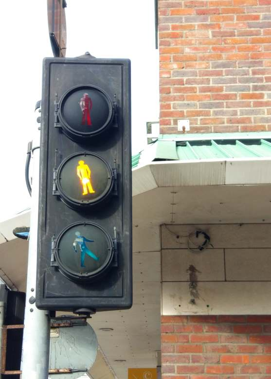
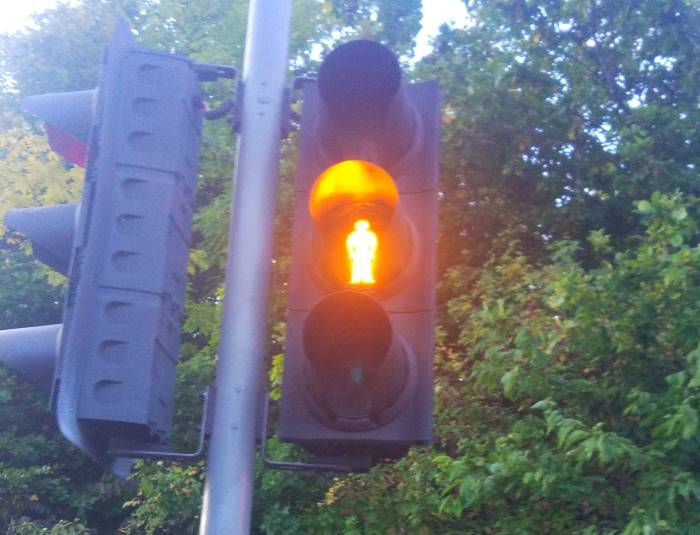
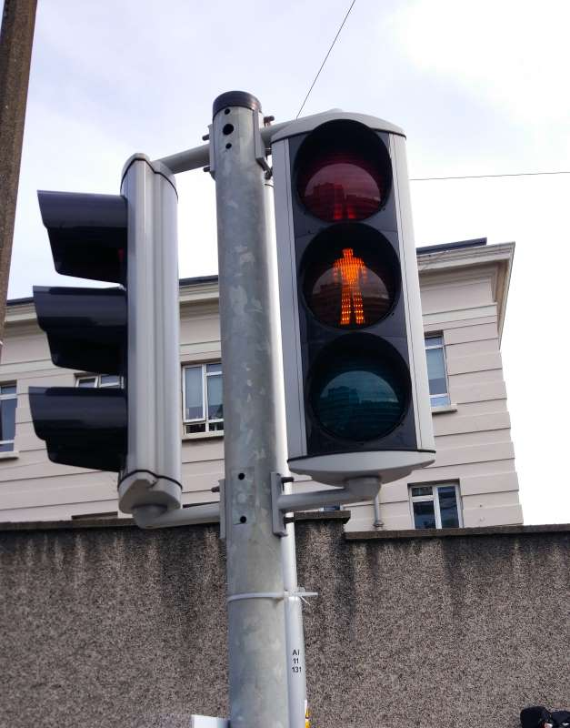
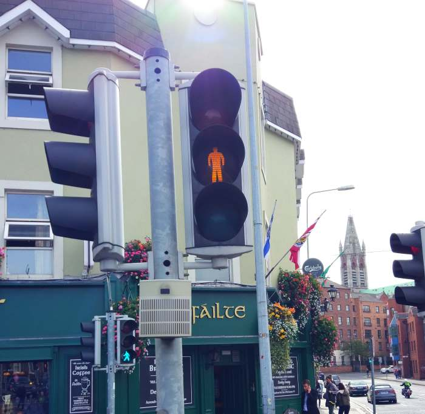

Yellow man traffic lights in Ireland
Ireland is the only country in the world that has a yellow man light on their pedestrian traffic lights.
Ireland's history of traffic lights is simular to the UK's, they used Mellors throughout the mellor era (Their Mellors are slightly different to UK ones as they are made by Traffic systems co-operative). Nowadays they use both Siemens traffic lights and Alustar traffic lights.
MELLOR - Traffic systems co-operative

Siemens


Alustar


CLICK HERE TO GO BACK TO MY TRAFFIC LIGHTS PAGE